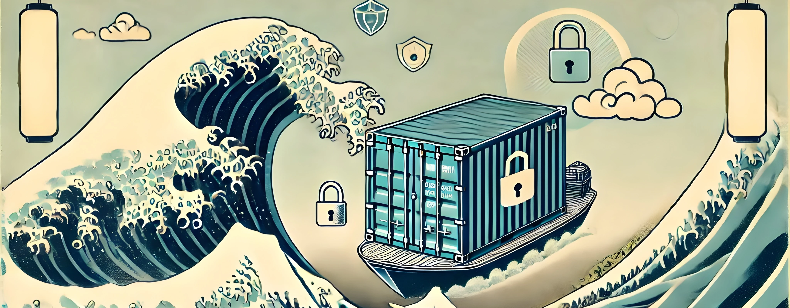
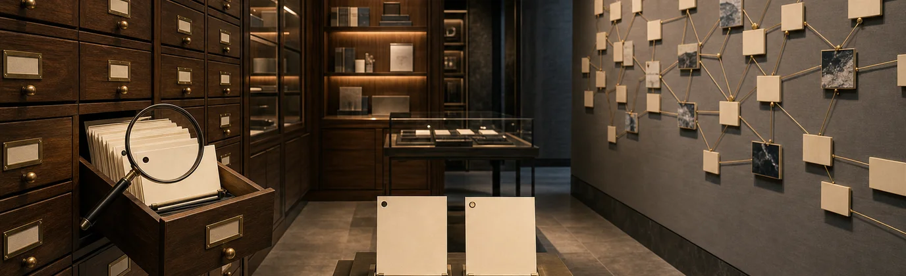

A new set spanning databases, teaching, quizzes, automation, and the blog itself. Each proposal explores its article through paper, photography, print, or sculpture. Compare against the current artwork below.
Solved local frustration becomes a shared repair. Strong hand/patch focal point; square should recompose one central hand repair and two repeated patches. Shallow crop retains repair but clips wrist.
Generation prompt
Create a horizontal 16:9 sophisticated adult cut-paper editorial collage for a technical essay about contributing the solutions you already found to open source, so others avoid your struggle. A bold communal paper quilt fills a central broad horizontal rectangle, composed of coral, turquoise, raspberry and pale apricot irregular paper pieces. Near center is one torn gap repaired with a distinctive turquoise paper patch; that exact simple patch shape repeats in two nearby places, suggesting a useful repair shared with others. A single monochrome cut-photo hand enters at lower edge, placing the first patch, careful believable anatomy. No scissors or tools. Collage reads as a shared repaired fabric of knowledge, not a puzzle with one perfect slot; repaired areas are visible irregular tears and overlap joins. Flat overhead, printed paper fibers, deliberate imperfect edges, minimal shadows, lively color and sophisticated asymmetrical composition. Keep focal hand and repairs centrally crop-safe. No words, letters, labels, writing, currency, cars, logos, watermark, beige table, machinery, miniatures, neon, charts, UI or corporate3D.
19 Security Notes: RegEx
Current coverNew proposal · backtracking-labyrinth
Small input, disproportionate repeated work. Abstract metaphor supplies no exploitable pattern. Fresh square should bring slip nearer first loop and compact the labyrinth; arbitrary center crop loses the input. Printed black forms retain contrast on light and dark UI.
Generation prompt
Horizontal16:9 sophisticated linocut and torn-paper editorial abstraction for a security essay about regular-expression backtracking consuming disproportionate computation from small input. A tiny chartreuse paper slip at left joins a single black ink path; that path doubles back repeatedly into a huge dense looping labyrinth occupying the center-right on warm white rag paper. Ink path is broad enough to see its recursive revisiting; almost circular irregular nested loops and overlapping branch choices, not a mathematical diagram or code. A slim chartreuse thread follows the black path partway and visibly circles back instead of progressing, making wasted repeated work apparent. The huge tangle compared to tiny slip is the story. Flat graphic print, bold sumi black dry ink grain, deckled paper and one sharp chartreuse accent. Off-center asymmetry with breathing room, few objects, no 3D rendering or machine. Keep input and first loops reasonably nearcenter for a square recomposition. No text, letters, regexsyntax, hacker, hoodie, green digital rain, logo, watermark, fake metrics, UI, cybersecurity shields, gears or beige studio apparatus.
20 Who put vulns in my patch?
Current coverNew proposal · repair-and-new-split
Necessary repair does not eliminate future risk. Beautiful readable macro texture, no claims of immunity. Square must keep three stitches and new adjacent split together; central crop plausible but fresh companion preferred. Original cover credit belongs only to retained source photograph, remove when promoting generated art.
Generation prompt
Horizontal16:9 mature editorial macro photograph of tactile paper repair for an essay about software patches fixing flaws while sometimes adding new risks. A broad lemon-yellow thick handmade paper sheet lies over muted lilac paper ground. One old ragged diagonal tear is deliberately repaired with a graphite-gray paper patch and three simple visible stitches of pale cotton thread. Beside the neatly repaired old tear, a different fresh smaller split opens along the edge of the patch, exposing lilac underneath: repair is necessary but not immunity. One lifted patch corner casts a crisp natural material shadow. Close monumental scale, few objects, asymmetric composition, beautiful grazing daylight bringing out coarse yellow fibers, graphite grain and white thread. Quiet intelligent tension, not alarmism or disaster. Entire old repair and new split within central60percent. This is material editorial photography, not an engineering tabletop scene. No needles, hands, tools, bandage, medical symbolism, words, labels, code, logos, watermark, fish, locks, shields, flames, circuitry, beige palette, machines or plastic rendering.
21 Async Stack Traces: Why Error.stack Lies to You
Current coverNew proposal · The history breaks; context continues
The generated print has four surviving soles plus a central absent step; red thread visibly bridges the missing history. Shallow crop retains all causal detail. Fresh square should place two paired footprints around the central blank gap, curving the thread to fit while preserving continuity. This is conceptual art, not a literal execution trace.
Generation prompt
Use case: stylized-concept. Wide16:9 editorial hero target1600x900. Create a beautiful restrained contemporary MONOPRINT and torn-paper editorial artwork for an essay about asynchronous stack traces: a call chain loses its historical path at suspension, while carried request context preserves causality across gaps. Against a light bone-gray rough paper field, a sequence of FIVE large matte-black printed shoe soles strides horizontally across the middle, alternating left and right. The center of this path is interrupted by a broad torn pale gap where one impression is missing. ONE thin but clearly readable vermilion-red stitched thread follows the path, passing through two small neat holes at every surviving sole impression, then stretches unbroken across the missing-step gap. The thread makes continuity visible despite the lost footprint. Only five footprints, one causal thread, one gap; spare powerful hierarchy. Black woodcut-like sole silhouettes with a few coarse analog tread marks, pale ripped-paper overlap at the missing step, vermilion thread real fiber detail, small muted rust ink patch at one edge. Flat overhead printmaking/collage, clean asymmetrical gallery-quality editorial composition, dry wit, tactile imperfect ink, no scenes or props, no three-dimensional miniature machine, no dark smoke. Wide horizon composition gives generous quiet paper space above and below; all steps/thread in central horizontal45percent for shallow crop. No text, letters, numbers, code, labels, clock, graph, network nodes, robot, circuitry, UI, arrow symbols, logos, watermark, outer frame or title. Do not make cross-hatching or grid pattern.
22 Quiz: NodeJS IO Mastery
Current coverNew proposal · A file in manageable pieces
Accepted monumental dark paper-sculpture photograph. The continuous jade file sheet becomes bounded silver chunks and a compact stack, illustrating streaming instead of loading the whole file. It does not assert measured throughput or encode every IO topic. A fresh square should bend the large sheet more tightly over a central separating edge and bring the receiving stack inside the lower-right; a center crop loses the stack. A shallow crop clips the sweeping curl but preserves chunk sequence. No square generated; existing covers remain.
Generation prompt
Use case: stylized-concept. Wide landscape16:9 sophisticated editorial hero for a NodeJS IO quiz about files, streams, buffers and backpressure. Show streaming as working with manageable pieces instead of swallowing the entire file. A monumental deep-jade matte paper sheet flows in a broad sculptural curl from upper left into center. Its lower edge separates into a graceful flowing sequence of six or seven small silver-gray rectangular paper pieces traveling across the middle toward a short tidy stack on the right. One intact sheet becoming bounded chunks, with obvious physical continuity from sheet edge to loose pieces. The huge flowing sheet is expressive rather than a precise technical diagram. Close monumental scale, graceful diagonal movement, no miniature machines, rails, gates, slots or trays. Rich charcoal-black photographic ground, jade green dominant paper, pale silver chunks, one restrained pale mint edge. Side light grazing paper fibers and crisp cut edges, shadows deep but legible; tactile mature paper sculpture photograph with sculptural waves rather than flat ribbons. Keep main separating edge and compact stack within central two thirds for future square recomposition. Full bleed wide art, no exterior card frame. No text, labels, numbers, code, arrows, diagrams, invented charts, logo, watermark, neon, skyscrapers, circuitry, computers, toy boats, beige tabletop or glossy corporate render. Elegant and materially believable, one idea readable at thumbnail scale.
23 Essential Docker Security Tips for Self-Hosting
Current cover

New proposal · The canary notices
Accepted canary photographic collage with visibly disturbed envelope seam. The bird references detection and verification; the envelope is already touched, so the art avoids implying an invulnerable container. Indigo/lavender/yellow contrasts with prior dark security art. A fresh square should place bird face upper-left and envelope seam lower-right, moving loose fragment closer; center crop loses tail and right envelope corner. Full16:9 preserves the entire observer/incident relationship. No square generated; existing covers remain.
Generation prompt
Use case: illustration-story. Create a wide landscape16:9 elegant independent-journal editorial photographic cut-paper collage for a Docker self-hosting security guide. The article says layered restrictions reduce risk, but verification and canary tripwires reveal when sensitive material is touched. Depict one large real golden-yellow canary in side profile, a crisp archival photographic scissor-cut silhouette occupying middle-left. It is attentive, looking toward one charcoal-black paper envelope at middle-right. The envelope is slightly opened at one corner: a torn pale inner-paper edge is visibly disturbed and a narrow loose dark paper fragment lies beside it. The bird is an observer of this disturbance, not a shield and not a guarantee that the envelope cannot be breached. Strong recognizable natural bird silhouette, clear tiny disruption with the eye/beak and opening at comparable height, no tiny security props. Ground is layered saturated indigo/navy matte stock with one large torn pale lavender region, vivid golden canary and charcoal envelope. Flat frontal photographic collage, bold asymmetric composition and wide negative space, natural fine feather photography against tactile paper grain and crisp cut edges. Subtle interlayer shadows only, even light, mature quiet visual tension. Keep canary face and opened seam in central60 percent so future square can recompose this relationship. Full bleed art, no frame. No Docker logo, shipping containers, Hokusai imitation, laptops, locks, shields, key icons, gates, trays, keyed slots, words, labels, numbers, fake evidence, warning symbols, watermark, beige architectural model, studio machinery or neon. No cartoon bird, comic expression or anthropomorphic costume.
24 Beware the Single-Purpose People
Current coverNew proposal · fragmented-coat
Coherent whole versus maximum fragmentation. Entire coat reads clearly at thumbnail scale; threads secondary. Fresh square should compress panels within recognizable coat outline, preserve lapels and sleeves. Shallow crop loses garment silhouette, prefer full16:9.
Generation prompt
Horizontal16:9 sophisticated witty paper fashion editorial collage for an essay warning that maximum code fragmentation is not useful modularity. A single recognizable cobalt-blue paper coat silhouette with simple lapels, two sleeves and a coherent overall shape is cut apart into too many small separated panels across center of a pale peach paper background. Panels still loosely imply ONE coat, but narrow gaps disrupt its shape. An excessive tangle of thin burgundy sewing threads jumps across the gaps trying to reconnect every little piece; a few threads trail farther than useful. Preserve coat recognizability and readable panel separation, no dozens of tiny unreadable confetti; about twelve to sixteen deliberate panels. One intact broad shoulder section contrasts with overly fragmented body. Theme: boundaries should serve the meaningful whole, not microscopic purity. Flat frontal handcrafted cut-paper artwork, contemporary design magazine fashion plate, ink grain and gentle physical paper shadows, strong cobalt/peach/burgundy contrast, mature and slightly absurd. Keep main garment insidecentral70percent. No actual people, bodies, scissors, needles, hands, injury, blood, text, typography, labels, logos, watermark, boxes, miniature city, machinery, diagram, neon or corporate3D.
25 Foreign Keys: Stop Asking If They're Fast
Current coverNew proposal · A restraint worth its cost
Protection metaphor comes from the article's seatbelt analogy. The clasp and figures remain prominent at thumbnail size; shallow crop trims silhouettes but retains joint protection. Fresh square should gather both full upper figures around the central belt buckle and leave the loose scrap in a lower corner.
Generation prompt
Use case: stylized-concept. Wide16:9 editorial hero target1600x900. Sophisticated adult photographic paper collage about database foreign keys: a constraint has a cost, like a seatbelt, but protects important relationships; removing protection blindly is a false optimization. Two tall simple irregular HUMAN SILHOUETTES cut from pale lavender fibrous paper sit side-by-side against deep emerald green stock. Across both figures a single broad REAL photographic black woven seatbelt runs diagonally from upper-left to lower-right and is properly joined at one large silver buckle near the center. The belt visibly keeps their lower sections aligned together while their loose upper paper edges lift slightly in a gust. A small third lavender paper scrap has drifted away below the belt, making lost reference versus protected relationship visible without disaster. One decisive protective diagonal, very large shapes, graphic full-bleed montage, no literal car interior, no miniature tableau. Preserve photographed fabric grain and metallic buckle against flat sharply cut paper people, deliberate asymmetry, cultured slightly wry editorial symbolism, only tiny interlayer shadows, clear lighting, charcoal/emerald/lavender/silver palette. Human forms are abstract blank cutouts with no faces, not children's dolls. Belt and buckle inside central60percent, silhouettes shoulders and bound sections visible at200px. No chains, broken chain links, server icons, electronics, database cylinders, arrows, code, fake charts, lettering, text, numbers, labels, logos, watermark, border, beige engineering model, neon or explosions.
26 Quiz: 9 JavaScript Promise Questions
Current coverNew proposal · Remember the handoff
Accepted editorial handoff collage: two anatomically readable hands transfer one parcel, while a third recovery hand waits below the gap in the strip. Missing return and recovery are metaphors, not a precise JavaScript state diagram. Fresh square should compress the two main hands toward a central parcel and retain a shorter gap with recovery hand below; center crop omits major hand silhouettes. Shallow2.25:1 crop trims recovery hand, so full16:9 preferred. Original cover fallback is a400×399px photograph; metadata points to that actual full cover file. No square generated; existing covers remain.
Generation prompt
Use case: illustration-story. Wide landscape16:9 sophisticated graphic photographic paper collage for a JavaScript promises quiz about passing returned values, missing returns and catching errors. Show a deliberate handoff: two large black-and-white photographic cut-out human hands reach toward one another across the middle, the left hand offering a small ochre folded-paper parcel and the right hand ready to receive it. Underneath them a broad flat plum-colored paper strip has a deliberate visible break precisely beneath the handoff, indicating that automatic continuity cannot be assumed. One smaller monochrome photographic catching hand reaches up from below beneath the break, representing recovery when the chain fails. This is an editorial metaphor, not a promise execution chart; no diagram arrows, labels or numerals. Make anatomy natural and believable, each hand visibly comes from an independently cropped sleeve at an image edge rather than extra fingers joined to another hand. The main two hands and parcel are the focal point; the small recovery hand subordinate. Rich pale peach matte paper background, dark plum strip, saffron/ochre parcel, monochrome photographic hands. Flat frontal collage with large graphic silhouettes, elegant asymmetry, clean scissor cuts, understated print grain and fine paper texture. Generous breathing room, the main parcel transfer and broken-strip region sit within central half of frame, catching hand close beneath for a square companion. Full bleed rectangular art with no mat or UI. No typography, text, logo, watermark, code, Rubik cube, laptops, machinery, keyed slots, gates, trays, neon, beige studio model or corporate3D. Intelligently wry and adult, not instructional clip art.
33 Postgres Text Searching Guide 2026
Current cover

New proposal · Three jobs, three tools
Each tool visibly engages a distinct material. Wide shallow crop retains the three interactions but clips tool handles. Fresh square should stack the three working tips diagonally, preserving comb/strip, brush/crumb, and tweezer/disc relationships rather than cropping to one tool.
Generation prompt
Use case: stylized-concept. Wide16:9 editorial hero target1600x900. An independent magazine paper-and-photographic collage about PostgreSQL text search: a mature search system selects the right primitive for the actual shape of the query, rather than making one tool do everything. Three oversized real photographic implements arranged in one beautifully composed horizontal sweep on saturated cobalt blue rough stock: at left a narrow black comb gathers several lime paper strips into a coherent aligned fan; in center a soft pale brush clears loose lime paper crumbs to reveal an intact longer lime strip; at right fine polished silver tweezers picks ONE precise lime paper disc from a small group of similar dark discs. Make relationships physical and visible, not decorative props. Each implement meets its own material, different job and different precision, yet all three are part of one toolkit. Flat frontal photographic cut-out collage, bold deliberate scissor edges, broad chartreuse paper accents, cobalt ground and matte black printed shadows, modern cultured editorial craft. The central brush and tweezer-disc selection form strong readable silhouettes at thumbnail size, fewer large shapes rather than many small details. Full bleed wide artwork, no tabletop room, no engineering architectural models, no beige. Keep tool tips and their material interactions inside the middle vertical55percent for shallow crops. No text, letters, numbers, words, labels, URL, UI, arrows, database cylinder, magnifying glass, logos, circuits, robots, watermark, title, decorative border or keyed aperture.